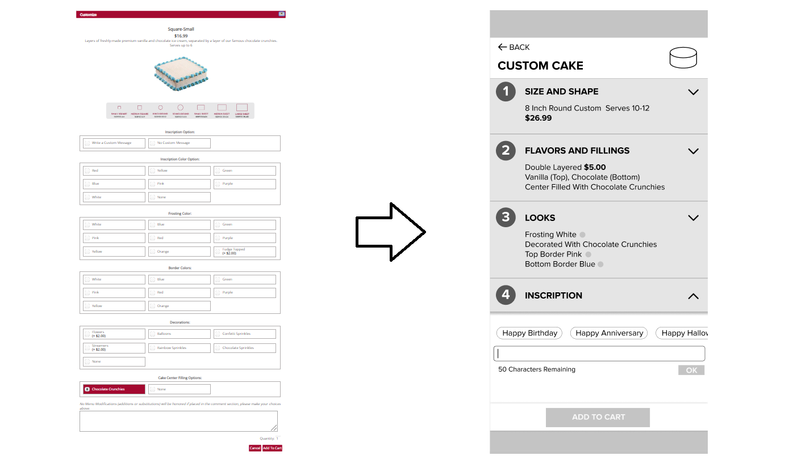
My Roles
UX Researcher
UX Designer
Team
Size: 4
The team consists of people with engineering and design backgrounds. Aside from performing UX research and design with the others, I contributed my organizational skill, analytical skill, logical thinking, and technical perspectives to the team. Teammates have entrusted me with the tasks of outlining research plans, analyzing research findings, and the final review of our work reports.
Tools and Languages
Figma
My Contributions and Artefacts
Usability Evaluation
Designed and conducted a focus group session and a think-aloud testing with interview session to evaluate the designs we made.
Grasped techniques for focus group moderating and individual usability testing and learned the pros and cons of different designs.
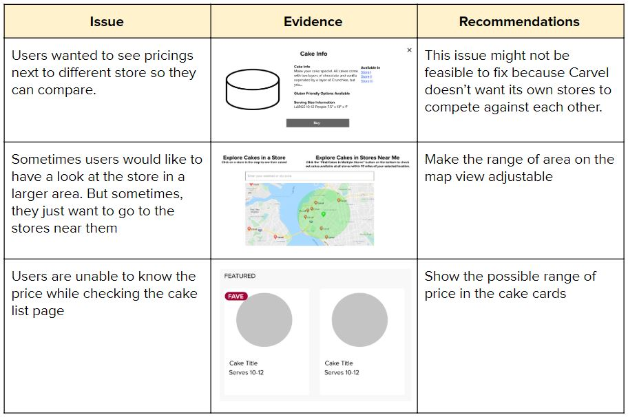
Mockups
Designed and created a clickable mockup demonstrating a solution to the problem that users cannot find the cake they saw on Carvel's main site in the store near them.
Learned to design logical and fluid web navigation.
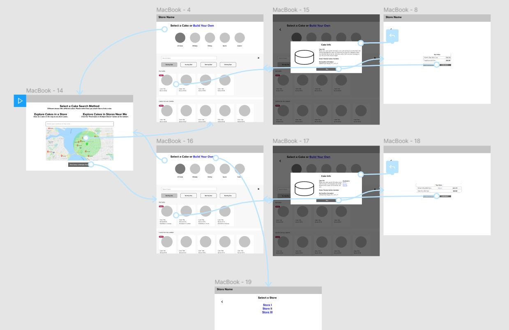
User Experience Design
Designed 3 website navigation styles with the team according to design implications resulting from research findings.
Acquired divergent thinking skills for producing multiple solutions to the same problem set.
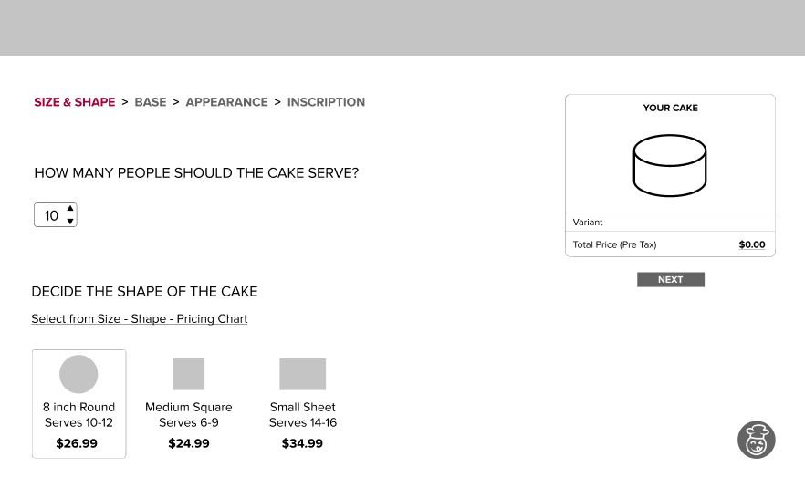
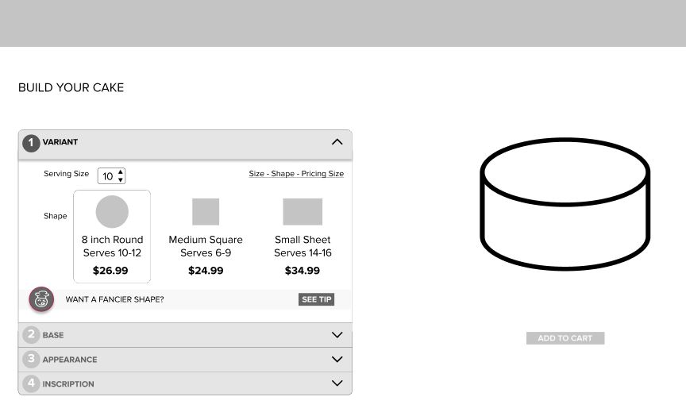
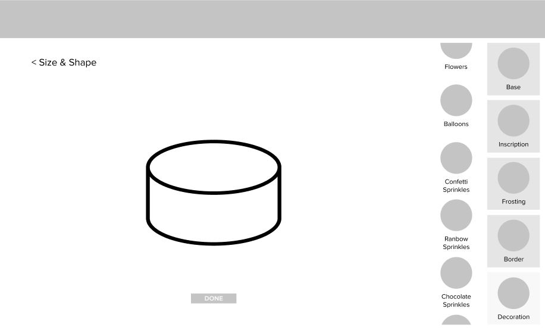
Persona and Journey Map
Created personas and journey maps according to research findings to aid the ideation process.
Learned how personas and journey maps can be used to help identify user pain points and design opportunities.
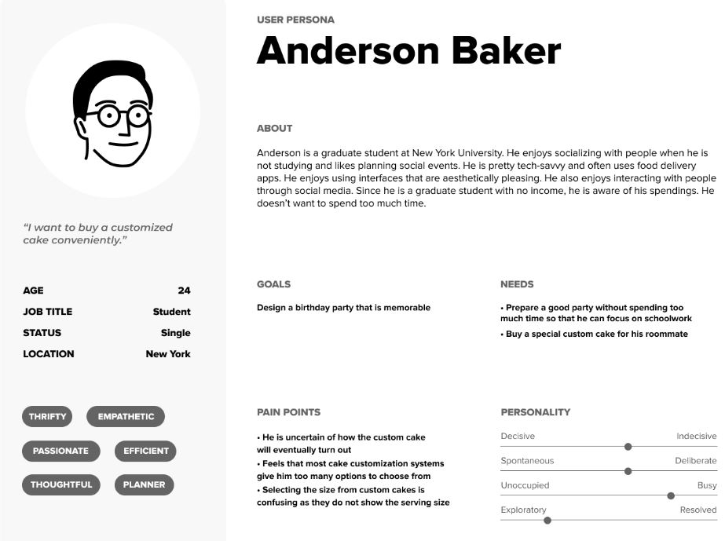
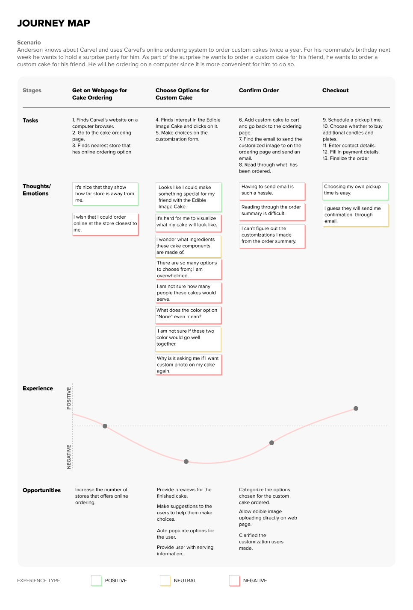
Research Finding Analysis
Analyzed 84 findings from 7 different UX research methods and distilled them into 14 major design implications under 6 main categories.
Learned to identify significant issues by analyzing findings from multiple research methods.
Think-aloud User Testing
Observed and analyzed users' processes of ordering a cake on a mobile device and identified usability issues.
Learned to analyze users' thoughts and actions and turn them into design implications.
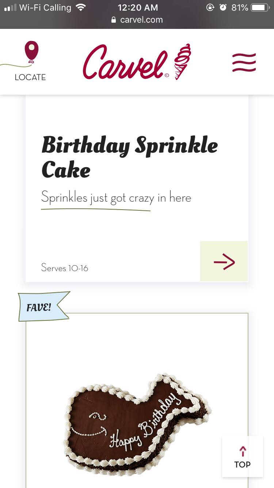
Affinity Mapping
Organized findings from interviews and derived design implications and possible solutions as a team.
Learned to categorize findings to support design process.
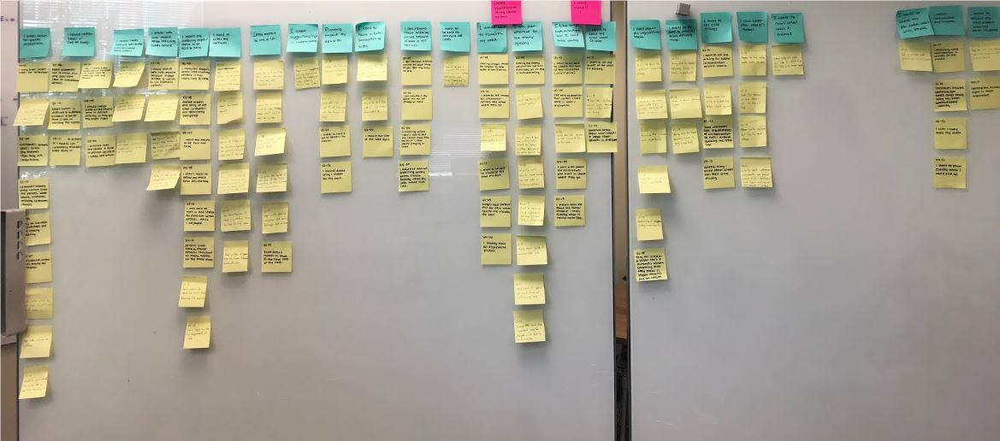
Competitive UX Benchmarking
Examined Carvel's and its competitors' websites and compiled more than 100 pros and cons concerning information delivery, appearance, and learning.
Learned how to examine the usability of display- and element-level components on websites.
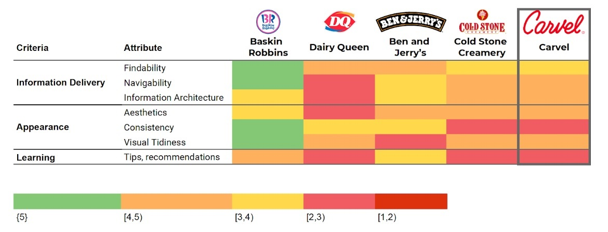
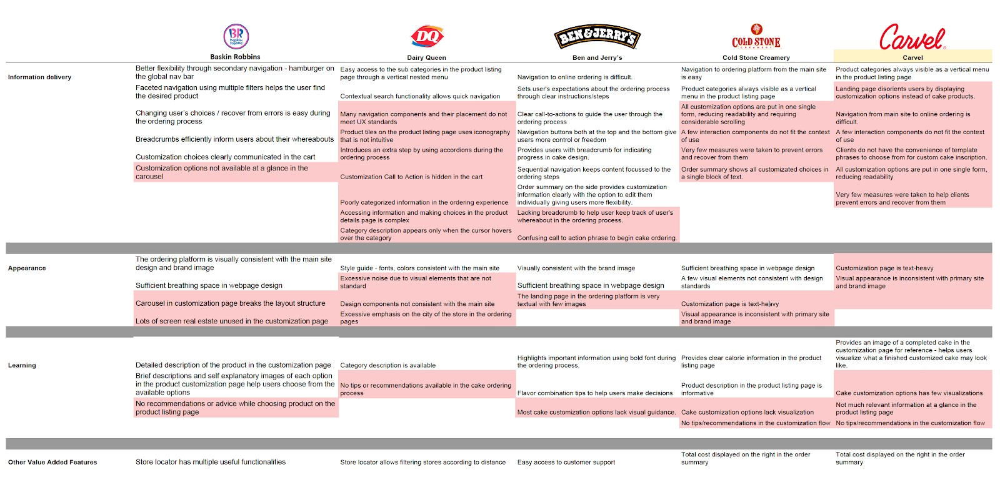